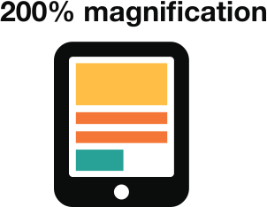

Designing for users with
low vision
Do use good colour contrasts and a readable font size

Don't use low colour contrasts and small font size

Making the default appearance of text easy to read will mean that people with visual impairments can take more in more quickly, particularly if assistive technology is not available.
Do publish all information on web pages

Don't bury information in downloads

Assistive technologies can HTML is the most accessible format because it can be and doesn’t require extra steps or technology to open.
Do use a combination of colour, shapes and text
Don't only use colour to convey meaning

Do follow a linear, logical layout
Don't spread content all over a page

Do put buttons and notifications in context

Don't separate actions from their context